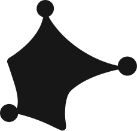

01
Structure
Neutral surfaces, deliberate spacing and strong hierarchy. The interface should feel organized before it feels expressive.
Forma is a structured visual system for agent-driven design. The identity should feel calm, precise and constructed—not magical, futuristic or generically “AI”.
Neutral surfaces, deliberate spacing and strong hierarchy. The interface should feel organized before it feels expressive.
Curves, handles and tension can suggest that a form is being manipulated. Avoid decorative distortion without purpose.
Orange is semantic. It means active, selected, transforming or a high-value action—not “add some color here”.

#171717Primary dark environment and core structure.
#F4F1EAPrimary light surface, canvas and reversed foreground.
#FF5A36Active, selected, transforming and primary action states.
#62605CSupport tone. Do not rely on it as low-contrast text on Ink.
Prefer Geist for UI and product communication. Use a compact, clear hierarchy. Avoid overly futuristic display faces, excessive uppercase, or typographic effects that make the product feel like generic AI software.
Nodes define structure. One active node may carry Signal orange when a transformation is happening.
A useful motion and illustration language. Keep it minimal so it reads as construction rather than a tutorial diagram.
The editor itself can echo the brand: active handles and selected layers naturally give Signal a functional role.

Text, images, shapes and brand elements become one editable composition.
This text can be copied into project guidance. The HTML remains the richer visual reference.
Forma is dark-first and warm-neutral. Use #171717, #F4F1EA and #FF5A36 as the core identity colors. Orange has semantic meaning: active, selected, transforming, focused or high-value action. Keep its use sparse. Use Geist as the primary product type direction. Typography should be clear and restrained. The brand personality comes primarily from structured geometry, tension, control points and vector-construction motifs—not decorative type or generic AI effects. Treat examples in this guide as visual-direction references, NOT pixel-perfect implementation requirements. Adapt component dimensions, spacing, layout and derived surface colors to product usability and accessibility while preserving the brand's hierarchy and character. Prefer dark mode as the canonical product experience. Provide a thoughtful light alternative using warm Paper rather than pure white. Avoid purple/blue AI gradients, sparkles, glow-heavy interfaces, neural-network imagery, generic SaaS abstractions, excessive orange, and arbitrary modifications to the supplied logo assets.